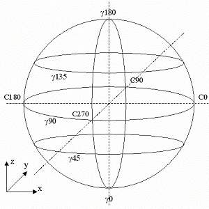

|
 |
| B-Type System | C-Type System |
Figure 349 — Light distribution curves
There are three kinds of light distribution curves, see Figure 349.
NOTE The classification as type A, B, C is according to Standard CEN TC 169, prEN 13032-1, CIE 121:
|
|
Figure 349 — Light distribution curves |
HISTORY New enumeration in IFC2x2.
XSD Specification:
<xs:simpleType name="IfcLightDistributionCurveEnum">EXPRESS Specification:
|
 EXPRESS-G diagram
EXPRESS-G diagram Link to this page
Link to this page